Krka National Park sits in a different category from most waterfall destinations. Where many famous falls concentrate their drama into a single plunging column, Krka's Skradinski Buk spreads its water across a 400-metre-wide series of seventeen travertine barriers, building from small cascades at the top into a wide, thundering curtain at the base. In late April with snowmelt still feeding the river from the Dinara highlands, it was running at close to full capacity.
The approach along the valley gives you no warning. You walk through mixed oak and pine forest, hear the water before you see it, then emerge onto a viewpoint that frames the entire cascade from above — the white water pouring over green-moss barriers into a series of turquoise pools, the old mills of Skradinski Buk village perched at the water's edge, the karst canyon rising steeply on both sides. It takes a moment to process the scale.
The boardwalk system at Krka is excellent — well-engineered wooden walkways that carry you around and above the falls without disturbing anything, with viewpoints positioned at every optimal angle. We arrived before the main rush of tour groups and had the upper sections largely to ourselves, with the water roaring at a volume that made conversation unnecessary.
The upper Krka River above the falls is quieter and, in some ways, even more beautiful — a winding turquoise channel through dense Mediterranean woodland, the water so clear that the limestone riverbed is visible through two metres of it, the canyon walls rising to either side. We walked the full circuit, about 6km in total, and came away with more photographs than we could reasonably justify.
Skradinski Buk Waterfalls
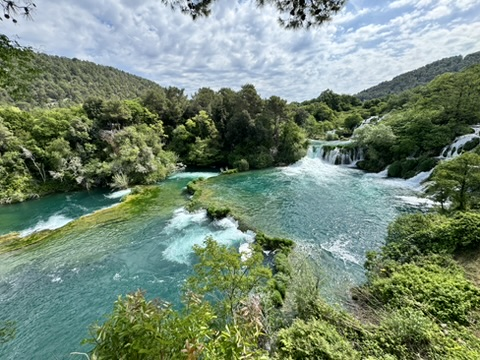
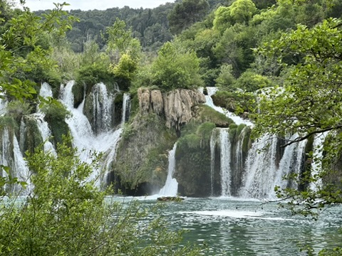
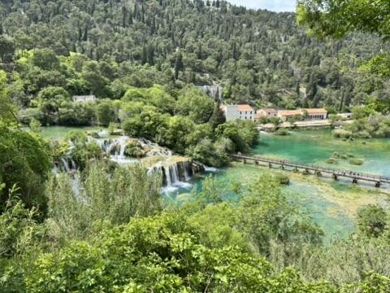
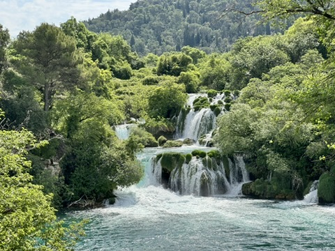
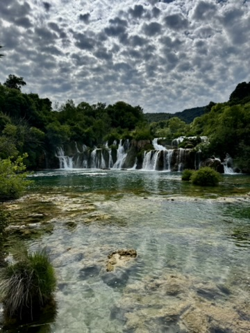
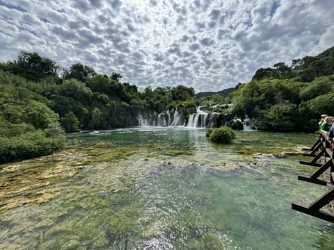
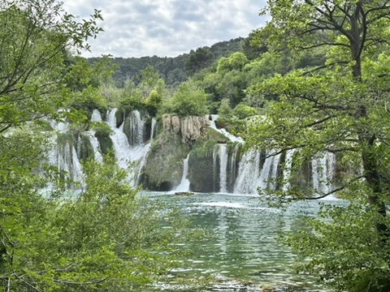
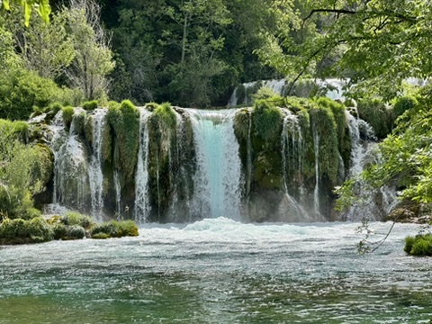
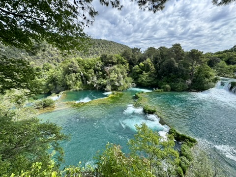
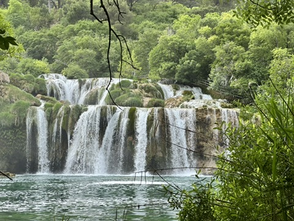
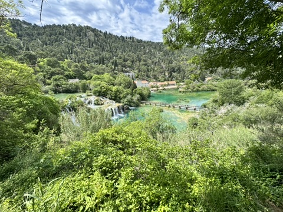
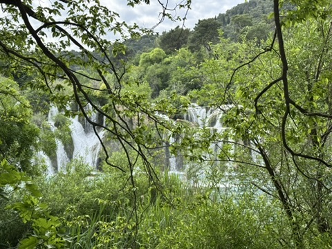
Krka River & Canyon
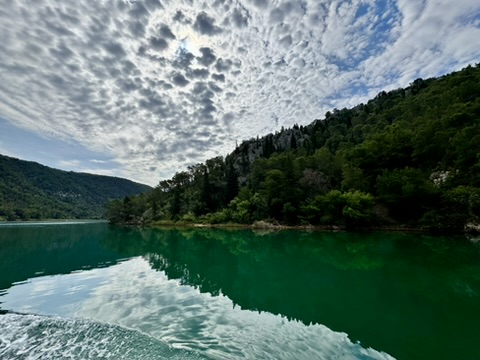
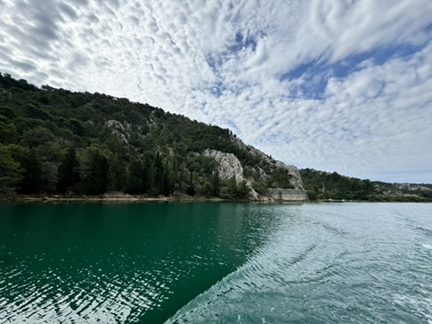
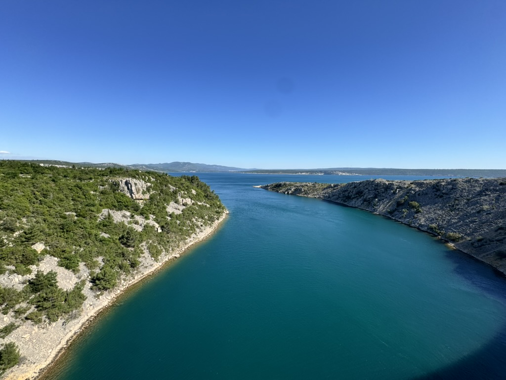
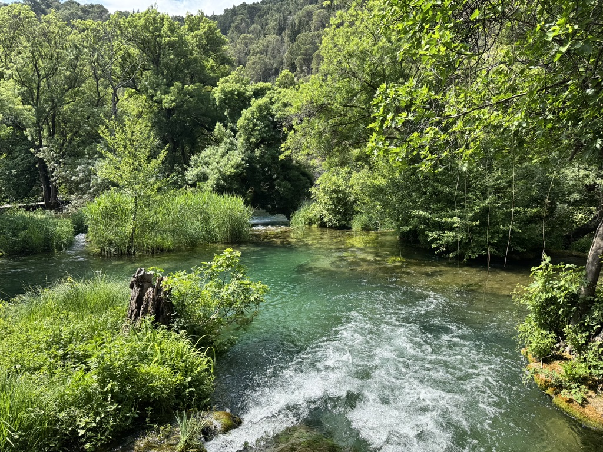
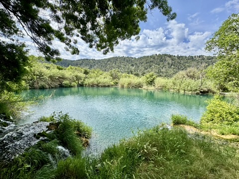
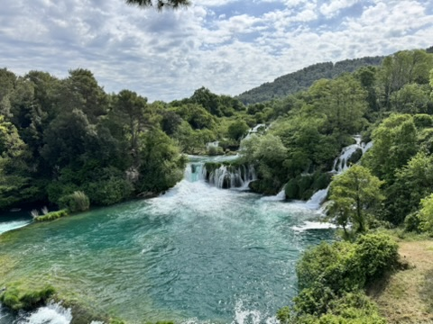
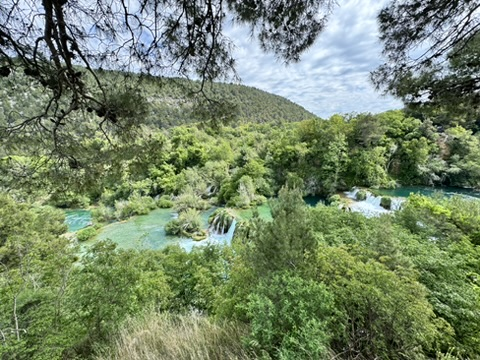
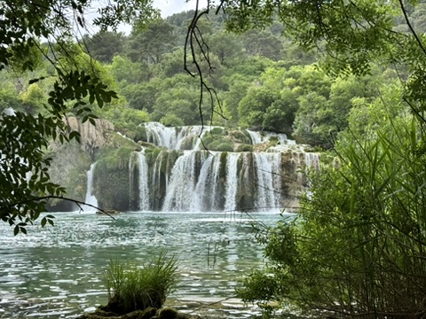
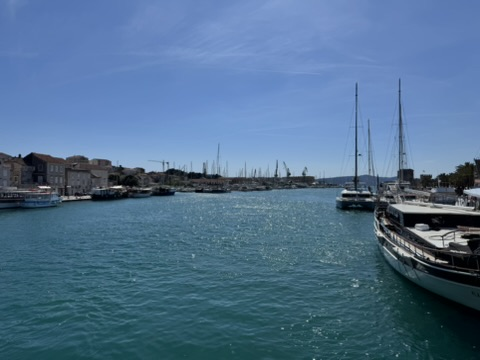
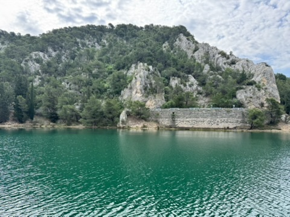
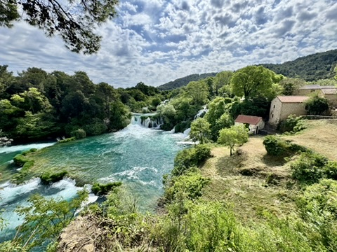
Alfred Hitchcock visited Zadar in the 1960s and declared its sunset "the most beautiful in the world." It's a quote that every local cafe and every tourist board in Dalmatia has deployed relentlessly since. The irritating thing is that it's accurate.
Zadar's western waterfront sits on a narrow peninsula with an unobstructed view west across the Adriatic to the open sea and a scattering of low islands. When the conditions are right — a clear sky, a scattering of high cloud, and the sun dropping to the horizon at just the right angle — the light that floods the waterfront turns every surface to copper and gold, the sea becomes a mirror of fire and crimson, and the silhouettes of sailboats and ferries against that sky produce compositions that need no photographer's skill to capture. You simply point the camera west and press the shutter.
We arrived in Zadar in time to check into Heritage Hotel Bastion — a Relais & Châteaux property in a 13th-century fortress in the heart of the old town — then walked the few hundred metres to the waterfront to claim a spot on the sea wall. The Sea Organ, Nikola Bašić's installation that channels the sound of waves into 35 pipes concealed beneath the marble steps, provided an ambient musical backdrop as the light show unfolded. We stayed until the sky turned grey-violet and the last sailboat disappeared into the dusk.
Zadar Sunsets
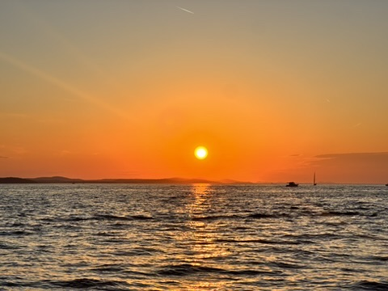
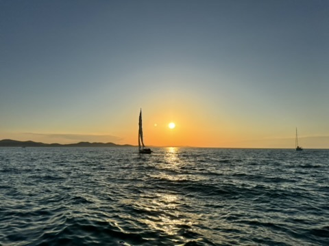
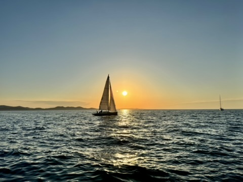
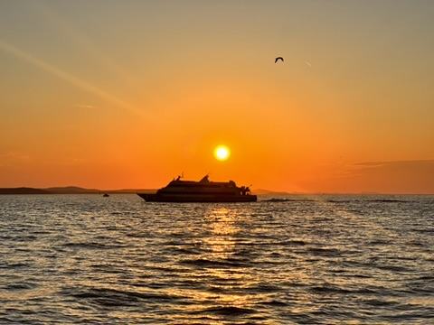
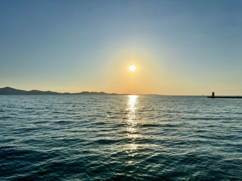
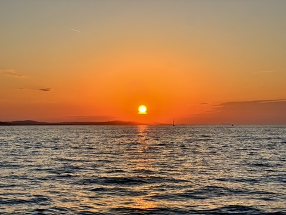
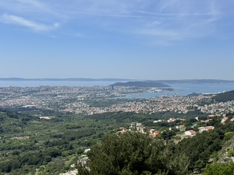
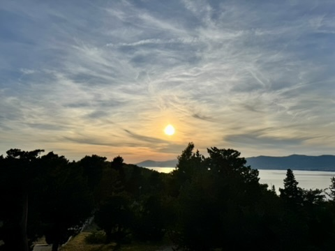
Zadar & Maslenica Hinterland
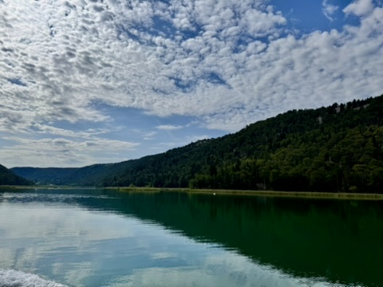
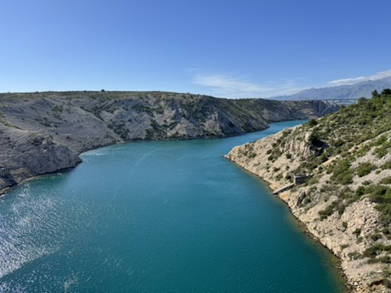
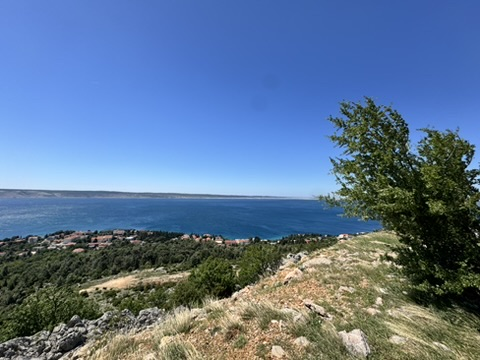
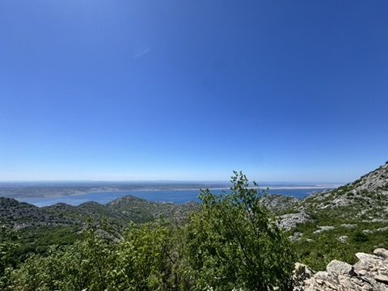
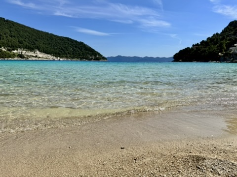